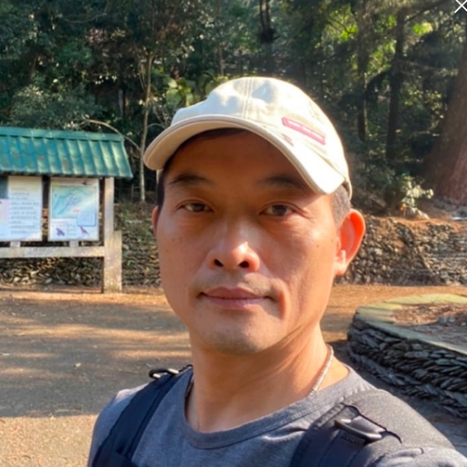
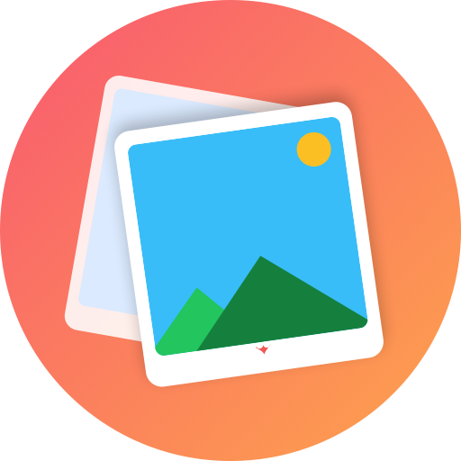

一、專案核心定位與設計哲學
專為高齡長輩（阿笑）量身打造之「零認知、零阻力、全家聯防」客廳專用視訊機
👵 長輩端極致零負擔
- 點頭像即撥號（Phase 25）：移除所有電話與攝影機按鈕，長輩看見家人大臉點一下就撥通。
- 來電 5 秒自動接聽：晚輩撥入時平板發出高穿透和弦鈴聲，倒數 5 秒自動開啟鏡頭，長輩不需手動找按鍵。
- 微光時鐘防誤觸：待機時進入純黑防烙印時鐘，碰觸喚醒時備有 800ms 防呆鎖定，絕不誤撥。
- 家庭 Google 相簿：平時作為客廳數位相框，支援手勢滑動翻頁，閒置 10 分鐘自動休眠進入微光模式。
☁️ 免費、免帳號、免伺服器
- Jitsi Meet WebRTC：採用開源免登入公開伺服器 (
jitsi.riot.im)，免主持人密碼、無過期踢除問題。 - ntfy.sh 即時信號 (SSE)：免費公共控制通道，毫秒級傳遞長輩來電、忙線與同步掛斷信號。
- 全家透明 LINE 聯防：長輩點擊任何一位家人，Google Apps Script (GAS) 即刻推播通知至家庭 LINE 群組。
- 全響度增益 (Phase 24)：鈴聲放大近 5 倍，WebRTC AGC 自動補償微弱說話聲，遠端音量 100% 鎖定。
• 線上正式站： https://78vince.github.io/smile-video-call/
• GitHub 原始碼倉庫：
git@github.com:78vince/smile-video-call.git (分支：main)• 本地專案目錄：
Jitsi Meet/Smile Video Call/
二、家庭成員專屬身分直通網址
每位家庭成員在手機或平板打開自己的專屬網址，無須輸入帳號密碼即可一鍵連線

阿龍 二兒子
家庭相簿 Google 相簿| 身分 / 角色 | 使用設備與情境 | 專屬直通網址 | 預設視訊房名 |
|---|---|---|---|
| 👵 阿笑媽媽 核心主機 |
客廳 Android 平板專用（四人頭像、相簿輪播、自動接聽） | https://78vince.github.io/smile-video-call/?u=axiao | smile-axiao-* |
| 👦 阿禮 直通晚輩 |
大兒子手機專用（單擊頭像直通長輩，支援接收 LINE 來電推播） | https://78vince.github.io/smile-video-call/?u=ali | smile-axiao-ali |
| 🧑 阿龍 直通晚輩 |
二兒子手機專用（單擊頭像直通長輩，支援接收 LINE 來電推播） | https://78vince.github.io/smile-video-call/?u=along | smile-axiao-along |
| 👩 宜靜 直通晚輩 |
家人晚輩手機專用（單擊頭像直通長輩，支援接收 LINE 來電推播） | https://78vince.github.io/smile-video-call/?u=yijing | smile-axiao-yijing |
| 👧 芃君 直通晚輩 |
孫女手機專用（單擊頭像直通長輩，支援接收 LINE 來電推播） | https://78vince.github.io/smile-video-call/?u=pengjun | smile-axiao-pengjun |
| 🛠️ 後台管理 家屬專用 |
管理控制台（LINE Webhook 測試、參數覆寫、即時推播測試） | https://78vince.github.io/smile-video-call/admin.html | — |
三、AnyDesk 遠端控制完整設定手冊（長照關鍵防護）
子女隨時從 Mac / iPhone 穿透連線客廳平板，無人值守排解故障、調音量、更新快取
Android 14 具備極強的隱私與省電限制，若未做好以下設定，會出現「在 Mac 上看得見畫面但滑鼠點擊無反應（純觀看模式）」或「平板必須手動打開 AnyDesk 晚輩才能連進去」的情況。
請務必依照下列 4 大步驟 逐一確認平板權限：
-
步驟 1：平板必須安裝官方控制插件「AnyDesk 插件 ad1」僅安裝 AnyDesk 主程式在 Android 上只能「觀看畫面」。要能在 Mac 或 iPhone 上模擬手指點擊與滑動，必須至 Google Play 商店補裝專屬插件：
• 在 Google Play 搜尋：AnyDesk 插件 ad1（英文：AnyDesk plugin ad1，套件代碼：com.anydesk.ad1，開發者為 AnyDesk Software GmbH）。
• 安裝後它不會在桌面產生圖示，這是正常的背景服務插件。 -
步驟 2：開啟 Android 系統「無障礙服務 (Accessibility Service)」【關鍵】插件安裝完成後，必須手動賦予系統級觸控模擬權限：
1. 打開平板的 「系統設定」 ➜ 找到「無障礙 (Accessibility)」。
2. 點入 「已安裝的服務 (Installed services)」。
3. 找到 「AnyDesk 插件 ad1」（或 AnyDesk Control Service）。
4. 將開關切換為 【開啟 (ON)】，並在系統安全彈窗中點選「允許」。
💡 驗證方式：在 Mac 連入平板時，頂部工具列會亮起「滑鼠與鍵盤 🖱️」控制圖示，而非只有聊天或上傳下載圖示。 -
步驟 3：設定「無人值守存取 (Unattended Access)」與完全存取權限讓晚輩連線時完全不需要長輩在平板端點擊「同意」或「輸入驗證碼」：
1. 在平板打開 AnyDesk 主程式 ➜ 點擊選單☰➜ 進入 「設定 (Settings)」 ➜ 「安全性 (Security)」。
2. 點擊頂部 「解除鎖定安全性設定」（需驗證平板 PIN 碼或圖形鎖）。
3. 勾選 「啟用無人值守存取 (Enable unattended access)」。
4. 設定一組專屬固定密碼（例如：Smile2026）。
5. 將「權限設定檔」選擇為 【完全存取 (Full Access)】（確認滑鼠、鍵盤、剪貼簿、音訊均已勾選允許）。 -
步驟 4：關閉 Android 電池最佳化與鎖定後台常駐（杜絕休眠被殺）避免 Android 系統在平板待機時自動將 AnyDesk 背景處理程序關閉：
1. 進入平板 「系統設定」 ➜ 「應用程式」 ➜ 點入「AnyDesk」。
2. 點選 「電池 (Battery)」 ➜ 選擇【不受限制 (Unrestricted)】。
3. 將 「若未使用應用程式，即暫停活動 / 移除權限」 的開關**關閉**。
4. 多工鎖定：在平板畫面下方滑出最近應用程式清單（Overview），在 AnyDesk 卡片右上角點選 「鎖定 🔒」 圖示。
💻 子女從 Mac 端連線方式
- 下載安裝 Mac 版 AnyDesk。
- 輸入長輩平板的 9 位數 AnyDesk ID。
- 輸入先前設定的無人值守固定密碼，勾選「記住密碼」。
- 滑鼠操作體驗：可直接點選家人頭像撥號、點右上角 🔄 重新整理快取、拖曳滑動瀏覽聯絡人。
🛠️ 應急終極備援：ADB + `scrcpy` (Mac 插線/區網)
- Mac 本機已備有 ADB 工具：
~/platform-tools/adb。 - 平板開啟「開發人員選項」➜「USB 偵錯 / 無線除錯」。
- Mac 插上傳輸線或同網段 WiFi，終端機執行
scrcpy，Mac 螢幕即刻彈出 1:1 低延遲平板投影。 - 特點：完全不依賴任何 Android 無障礙服務或第三方軟體，具備 100% 絕對控制權。
四、平板端硬體設置與 Android「雙軌音量」機制
解決通話音量小聲、螢幕休眠防烙印與全螢幕 PWA 運作細節
Android 系統將音量分為 「媒體音量 (Media)」 與 「通話音量 (Voice Call)」 兩套獨立軌道：
• 平時沒通話時按平板側邊音量鍵，調整的只有「媒體音量」。
• 一旦視訊通話接通，系統音訊通道會瞬間切換成「通話音量」。若平板的通話音量先前停在 30%，通話就會非常小聲！
• 一勞永逸解決方法：在通話接通狀態中，直接按平板側邊的「音量 +」鍵調至 100%；或進入 Android「設定」➜「音效與震動」➜ 將「通話音量」拉桿調到最大。
⚡ 電源與螢幕常亮配置
- 客廳固定插電座充：客廳平板建議固定擺放於客廳電視櫃或茶几立架上，保持常時插電。
- 開發人員選項設定：至 Android「設定」➜「系統」➜「開發人員選項」➜ 開啟 「充電時保持喚醒 (Stay awake)」。
- 微光時鐘防烙印保護：閒置 3 分鐘網頁自動覆蓋純黑防烙印時鐘遮罩，螢幕像素維持極低功耗運作，保護 AMOLED / LCD 面板。
- 喚醒防呆機制：輕觸微光時鐘喚醒時，系統自動啟動 800ms 防誤觸冷卻期，喚醒當下的觸碰絕對不會誤觸底下的撥號卡片。
📲 PWA 全螢幕與快取更新
- 新增至主螢幕：在 Chrome 開啟網址 ➜ 點右上角「⋮」➜ 選擇「新增至主螢幕」或「安裝應用程式」。
- 原生全螢幕體驗：啟動後無任何網址列，且程式內建「首觸全螢幕（First Touch Fullscreen）」自動隱藏系統虛擬鍵與通知列。
- 一鍵快取刷新按鈕：若網頁原始碼有更新，只要在平板頂部點擊 「🔄 重新整理」按鈕，Service Worker 會自動清除舊快取並重新載入最新版本（目前為
smile-call-v32）。
五、雲端通訊與 LINE 中繼站配置細節
Google Apps Script (GAS) 轉發中繼站、LINE 官方帳號與 ntfy.sh 即時通道
| 通訊元件 | 服務架構 / 端點 | 關鍵配置與注意事項 |
|---|---|---|
| 視訊通話核心 | jitsi.riot.im (WebRTC External API) |
• 免費開源、免註冊、無主持人驗證限制。 • 音質與音量強化 (Phase 24)：啟用 WebRTC AGC（自動增益補償）放大輕微細語，成員加入時自動鎖定遠端音量為 100% ( setParticipantVolume=1)，Opus 頻寬設為 64kbps。
|
| 即時信號通道 | ntfy.sh/smile-axiao-call-78vince (SSE) |
• 輕量級 Server-Sent Events 即時通道，延遲低於 300ms。 • 負責晚輩呼叫時觸發長輩平板響鈴、啟動 5 秒自動接聽、雙向同步掛斷與通話忙線提示。 |
| LINE 推播機器人 | LINE 官方帳號：阿笑的視訊機 (ID: @355pvwuh) |
• 已綁定家庭 LINE 群組 ID：Cbaa9407dcce090399acdf70d6b344200。• 防干擾設定：至 LINE Developers Console 將 「Use webhook」切換為【關閉 (OFF)】，機器人平時在群組聊天絕不插嘴回覆，僅在長輩於平板撥號時主動推播來電。 |
| 雲端中繼腳本 | Google Apps Script (GAS) Web App google-apps-script-line.js |
• 執行網址： https://script.google.com/macros/s/AKfycbwFd5_E2nJ14Dmf6ZNuqTgaxWrVtJRNeQLL8wPcYyaEC3ZGa8X9Xs8j_gMfDeO-V9ZZAQ/exec• GET 診斷： 瀏覽器直接開啟可檢查 LINE 連線與群組 ID 綁定狀態。 • 相簿代理： 支援 ?action=photos 跨域爬取公開 Google 相簿最新圖片清單。
|
六、介面視覺與排版技術規格 (Phase 25 最新版)
低彩度 Slate 質感配色、雙欄自適應與極致簡潔的「純頭像點擊」互動
📐 阿笑長輩主畫面版型（兩欄式）
- 左欄（生活功能 Dock，固定 120px）：
- 家庭相簿封面（大圓形 120px，無字）。
- 微光時鐘封面（大圓形 120px，無字）。
- 垂直排列，常駐左側不隨右側聯絡人捲動。
- 中間分隔線： 1.5px 淡灰柔和線條 (
#e2e8f0)。 - 右欄（家人聯絡人清單）：
- 頭像直徑 200px（
clamp(140px, 26vh, 200px)），3px 柔白立體邊框。 - 家人姓名（加粗 Slate-800，字體
clamp(1.4rem, 2.8vh, 1.95rem)）。 - 移除電話與視訊按鈕（Phase 25）：整張卡片皆具備
cursor: pointer點擊撥號功能。 - 垂直滾動架構： 目前 4 人自動居中；未來新增聯絡人自動排入第二列，支援平滑上下滑動。
- 頭像直徑 200px（
🔊 聲學音訊增益架構 (Web Audio API)
- 全新高穿透 Ding-Dong 電話和弦鈴聲：
- 第一聲 Ding：784Hz [G5] + 1046.5Hz [C6]（三角波）。
- 第二聲 Dong：659Hz [E5] + 880Hz [A5] + 1318.5Hz [E6]。
- 大幅提升長輩高頻衰退聽力的感知響度。
- 專業動態壓縮器 (DynamicsCompressorNode)：
- 主增益拉升至 0.95（原本為 0.2，響度提升近 5 倍）。
- 動態壓縮器自動抑止瞬間破音，兼具震撼音量與通透清晰度。
- 觸控反饋音效：點擊音量拉升至 0.7（三角波）。
七、歷次開發演進完整歷程總表 (Phase 1～25)
從專案雛形初始化到高齡無障礙極致優化的完整開發軌跡
| 階段 | 時間 | 核心更新與重要功能 | 快取版本 |
|---|---|---|---|
| Phase 1-4 | 2026-10-28 | 專案初始化、Jitsi WebRTC 串接、高對比大按鈕、防呆響鈴音效。 | v1~v4 |
| Phase 5-8 | 2026-10-29 | 雙向同步掛斷、ntfy 信號通道、GAS LINE 機器人推播、微光待機時鐘。 | v5~v8 |
| Phase 9-12 | 2026-10-29 | Google 相簿 5 秒自動輪播、觸控手勢滑動、防誤觸喚醒冷卻 (800ms)。 | v9~v14 |
| Phase 13-17 | 2026-10-29 | 新增宜靜與芃君、純語音通話模式、後台管理頁面 admin.html、四欄佈局。 |
v15~v24 |
| Phase 18 | 2026-10-30 | 主畫面兩欄式重構（左生活相簿、右通話清單）、頂部一列收納、低彩度 Slate 配色。 | v25 |
| Phase 19-21 | 2026-10-30 | 長輩頭像尺寸放大驗證 (180px ➜ 220px ➜ 320px) 與生活功能 180px 調適。 | v26~v28 |
| Phase 22 | 2026-10-30 | 生活功能縮小鎖定為 120px、頭像 240px、水平滾動架構實作。 | v29 |
| Phase 23 | 2026-10-30 | 依需求定調：垂直上下滾動、頭像直徑 200px、間距縮小緊湊、生活功能 120px。 | v30 |
| Phase 24 | 2026-11-05 | 通知鈴聲放大近 5 倍（增益 0.95、動態壓縮防破音、雙音清脆和弦）、WebRTC AGC 自動增益補償、參與者音量 100% 滿載輸出。 | v31 |
| Phase 25 | 2026-11-05 | 移除電話與視訊按鈕，回歸純淨「點選頭像即刻撥號」，全卡觸控縮放回饋，視覺完美垂直置中。 | v32 |
八、常見問題與故障排除速查 (FAQ)
平時維護或長輩反饋異常時的一鍵排查處方
Q1：AnyDesk 連進平板後，滑鼠點擊完全沒反應？
原因： Android 14 把無障礙服務自動關閉了，或是缺少控制插件。
解法： 拿起平板，到「系統設定」➜「無障礙」➜「已安裝的服務」，檢查「AnyDesk 插件 ad1」是否處於「開啟」。確認開啟後，Mac 工具列便會出現滑鼠圖示，即可恢復正常操控。
Q2：視訊通話對方的聲音聽起來很小聲？
原因： 平板調整的是「媒體音量」，通話接通後 Android 切換為「通話音量」。
解法： 在「通話中」直接按平板側邊的音量增加鍵拉到最滿；或者到 Android 設定 ➜ 音效 ➜ 將「通話音量」拉桿調至 100%。
Q3：代碼推上 GitHub 後，平板畫面還是舊的？
原因： PWA Service Worker 快取了舊版本。
解法： 點擊平板頂部右上角單色的 「🔄 重新整理按鈕」，網頁會自動註銷舊快取並立即載入最新版 smile-call-v32。
Q4：家庭群組平時聊天，LINE 機器人一直插嘴回覆？
原因： LINE 開發者後台開啟了 Webhook。
解法： 登入 LINE Developers Console ➜ 進入 Channel ➜ Messaging API 分頁 ➜ 將 「Use webhook」切換為【關閉 (OFF)】 即可徹底安靜，完全不影響長輩撥號時的主動推播。